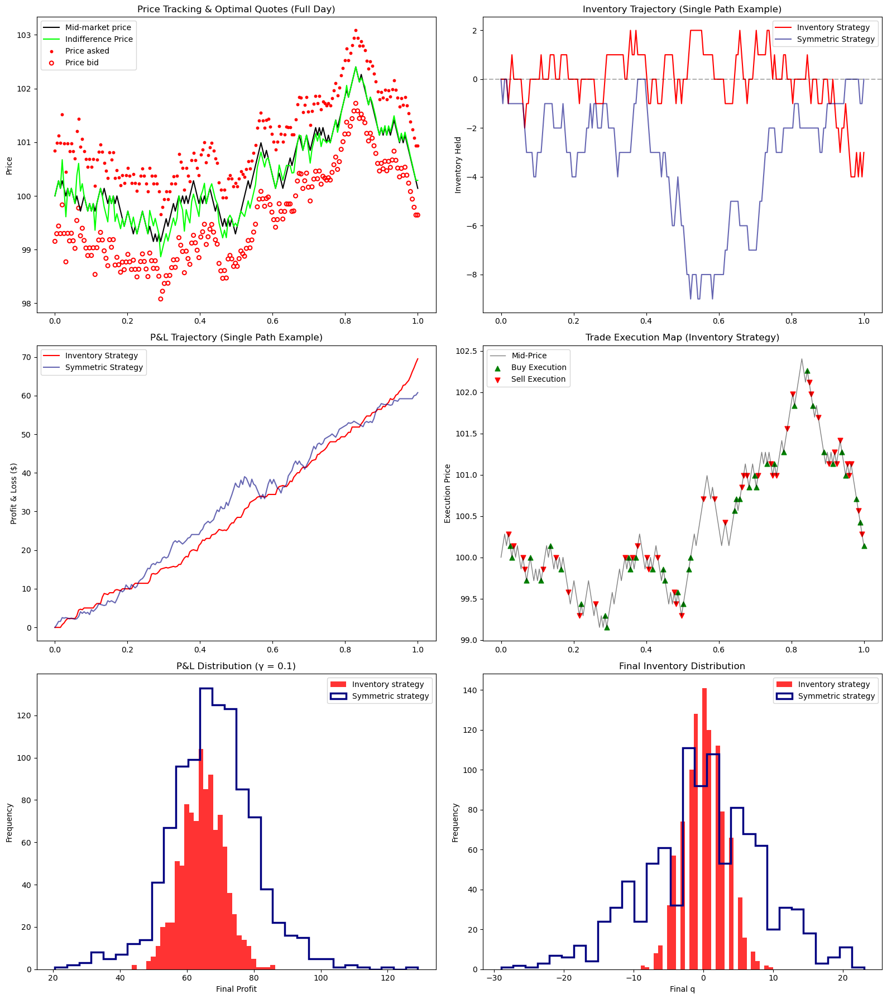
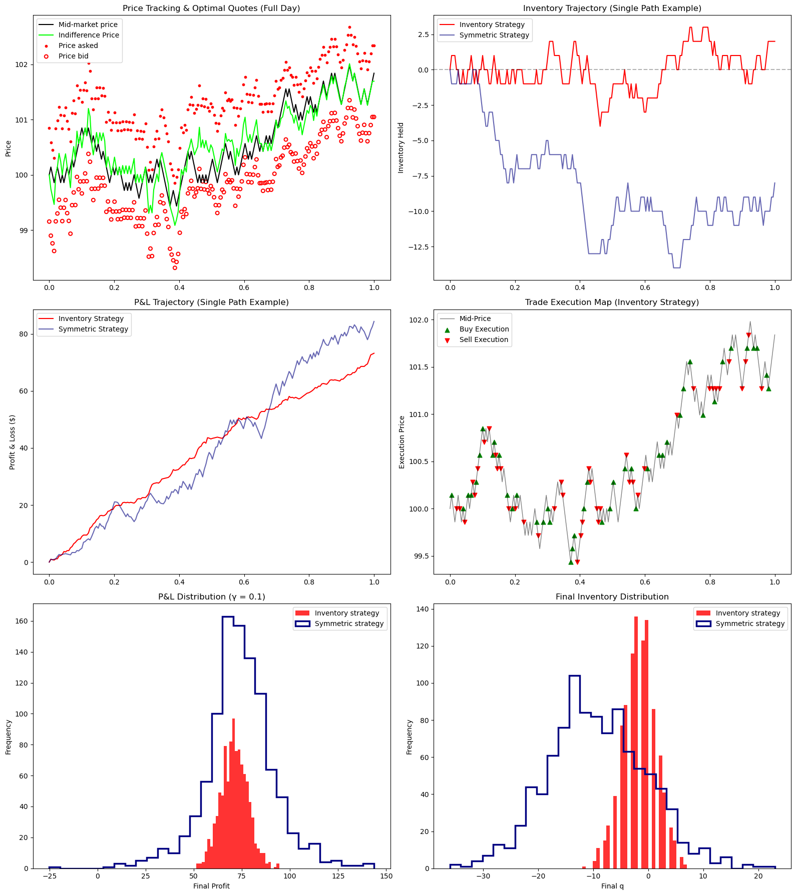
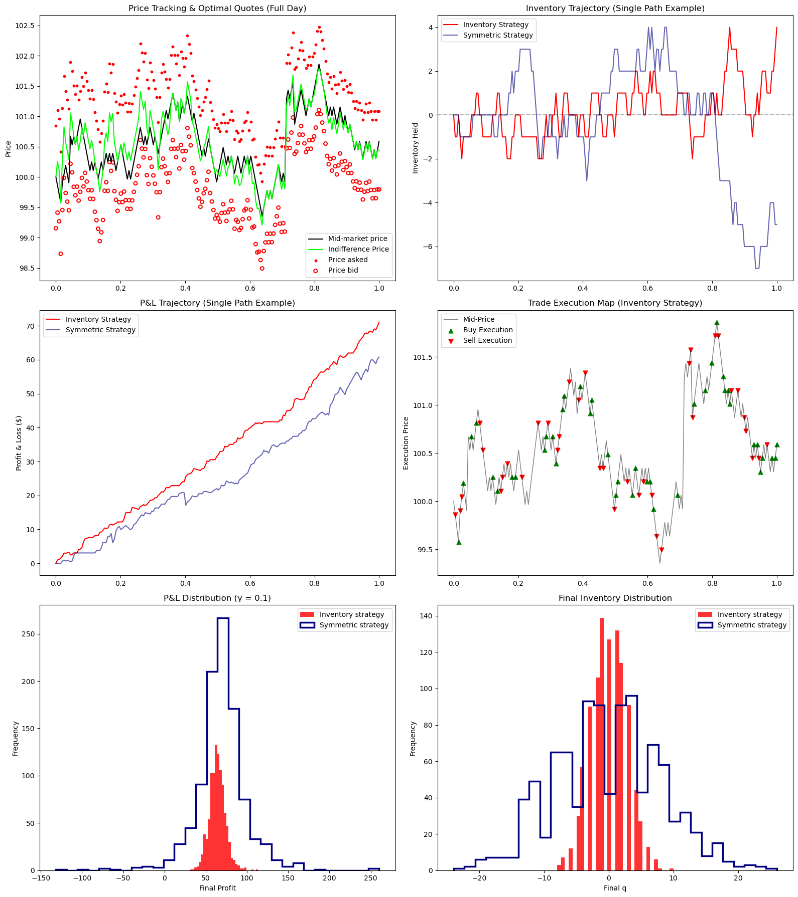

import numpy as np
import matplotlib.pyplot as plt
import pandas as pd
# 1. Base Parameters from Avellaneda-Stoikov (2006)
s_0 = 100.0
T = 1.0
sigma = 2.0
dt = 0.005
k = 1.5
A = 140.0
simulations = 1000
N = int(T / dt)
time_grid = np.linspace(0, T, N)
def simulate_market_maker(strategy="inventory", ask_multiplier=1.0, bid_multiplier=1.0, jump_diffusion=False, gamma=0.1):
S = np.zeros(N)
S[0] = s_0
q = np.zeros(N)
X = np.zeros(N)
# Tracking arrays for Graph 1
r_track = np.zeros(N)
p_a_track = np.zeros(N)
p_b_track = np.zeros(N)
for i in range(N - 1):
t = time_grid[i]
r = S[i] - q[i] * gamma * (sigma ** 2) * (T - t)
optimal_spread = gamma * (sigma ** 2) * (T - t) + (2 / gamma) * np.log(1 + gamma / k)
if strategy == "inventory":
p_a = r + optimal_spread / 2
p_b = r - optimal_spread / 2
else:
p_a = S[i] + optimal_spread / 2
p_b = S[i] - optimal_spread / 2
r_track[i] = r
p_a_track[i] = p_a
p_b_track[i] = p_b
delta_a = p_a - S[i]
delta_b = S[i] - p_b
lambda_a = A * np.exp(-k * delta_a) * ask_multiplier
lambda_b = A * np.exp(-k * delta_b) * bid_multiplier
if np.random.rand() < (lambda_a * dt):
q[i+1] = q[i] - 1
X[i+1] = X[i] + p_a
else:
q[i+1] = q[i]
X[i+1] = X[i]
if np.random.rand() < (lambda_b * dt):
q[i+1] = q[i+1] + 1
X[i+1] = X[i+1] - p_b
price_shock = np.random.choice([1, -1]) * sigma * np.sqrt(dt)
if jump_diffusion and np.random.rand() < (5 * dt):
price_shock += np.random.choice([1, -1]) * np.random.exponential(1.5)
S[i+1] = S[i] + price_shock
# Carry forward final step for trackers
r_track[-1], p_a_track[-1], p_b_track[-1] = r_track[-2], p_a_track[-2], p_b_track[-2]
PnL = X + q * S
return time_grid, S, q, X, PnL, r_track, p_a_track, p_b_trackThe Math of Market Making: Avellaneda-Stoikov
Quantitative Finance
Stochastic Control
Python
Featured
Pitting an inventory-based stochastic control strategy against naive market making in high-frequency limit order books.
Author
Jordan Chong
Published
April 8, 2026


Overview: Solving for Inventory Risk
[cite_start]This project implements the foundational market-making model proposed by Avellaneda & Stoikov (2006)[cite: 1, 2]. [cite_start]While most retail algorithms quote symmetrically around the mid-price, professional market makers must account for Inventory Risk— the danger of holding too much stock while the price moves against them[cite: 5, 6, 21].
Key Implementations:
- [cite_start]The Indifference Price: Derived from a CARA utility framework to determine the subjective valuation of an asset given current inventory levels[cite: 7, 8, 56].
- [cite_start]Optimal Calibration: Using the Hamilton-Jacobi-Bellman (HJB) equation to solve for the optimal distance of bid and ask quotes[cite: 39, 170, 171].
- [cite_start]Stress Testing: Expanding the model to handle Toxic Order Flow and Fat-Tail Jump Diffusion to reflect modern market microstructure[cite: 35, 129, 142, 143].
Research & Simulation Notebook
The following notebook contains the full derivation of the simulation engine, the Monte Carlo logic, and the comparative performance metrics.
Part 1: The Core Simulation Engine
Part 2: Running the Monte Carlo & Generating Visualizations
This block runs both strategies 1,000 times, computes the performance metrics required (Profit, Std Dev, Final \(q\)), and generates the visualizations.
def run_monte_carlo(ask_mult=1.0, bid_mult=1.0, jumps=False, gamma_val=0.1):
results = {"inventory": {"pnl": [], "final_q": []},
"symmetric": {"pnl": [], "final_q": []}}
sample_paths = {}
print("Running simulations, please wait...")
for strat in ["inventory", "symmetric"]:
for i in range(simulations):
t, S, q, X, PnL, r_t, p_a_t, p_b_t = simulate_market_maker(
strategy=strat, ask_multiplier=ask_mult, bid_multiplier=bid_mult, jump_diffusion=jumps, gamma=gamma_val
)
results[strat]["pnl"].append(PnL[-1])
results[strat]["final_q"].append(q[-1])
if i == 0:
sample_paths[strat] = (t, S, q, PnL, r_t, p_a_t, p_b_t)
# Calculate Risk Metrics
metrics = []
for strat in ["inventory", "symmetric"]:
pnl_array = np.array(results[strat]["pnl"])
q_array = np.array(results[strat]["final_q"])
metrics.append({
"Strategy": strat.capitalize(),
"Mean Profit": np.round(np.mean(pnl_array), 2),
"Std Dev (Profit)": np.round(np.std(pnl_array), 2),
"Mean Final q": np.round(np.mean(q_array), 2),
"Std Dev (Final q)": np.round(np.std(q_array), 2),
"Sharpe Ratio": np.round(np.mean(pnl_array) / np.std(pnl_array), 2) if np.std(pnl_array) > 0 else 0
})
df_metrics = pd.DataFrame(metrics)
print("--- Performance Metrics ---")
print(df_metrics.to_string(index=False))
# --- Visualizations (6-Panel Layout) ---
fig, axs = plt.subplots(3, 2, figsize=(16, 18))
t, S, q, PnL, r_t, p_a_t, p_b_t = sample_paths["inventory"]
# 1. Price Tracking (Full Day)
axs[0, 0].plot(t, S, label='Mid-market price', color='black', linewidth=1.5)
axs[0, 0].plot(t, r_t, label='Indifference Price', color='lime', linewidth=1.5)
# Solid red dots for the Ask
axs[0, 0].scatter(t, p_a_t, color='red', s=10, label='Price asked')
# Larger hollow red donuts for the Bid
axs[0, 0].scatter(t, p_b_t, facecolors='none', edgecolors='red', linewidths=1.5, s=25, label='Price bid')
axs[0, 0].set_title("Price Tracking & Optimal Quotes (Full Day)")
axs[0, 0].set_ylabel("Price")
axs[0, 0].legend()
# 2. Inventory Trajectory
axs[0, 1].plot(t, q, label="Inventory Strategy", color="red", linewidth=1.5)
axs[0, 1].plot(t, sample_paths["symmetric"][2], label="Symmetric Strategy", color="navy", linewidth=1.5, alpha=0.6)
axs[0, 1].set_title("Inventory Trajectory (Single Path Example)")
axs[0, 1].set_ylabel("Inventory Held")
axs[0, 1].axhline(0, color='black', linestyle='--', alpha=0.3)
axs[0, 1].legend()
# 3. P&L Trajectory
axs[1, 0].plot(t, PnL, label="Inventory Strategy", color="red", linewidth=1.5)
axs[1, 0].plot(t, sample_paths["symmetric"][3], label="Symmetric Strategy", color="navy", linewidth=1.5, alpha=0.6)
axs[1, 0].set_title("P&L Trajectory (Single Path Example)")
axs[1, 0].set_ylabel("Profit & Loss ($)")
axs[1, 0].legend()
# 4. NEW: Trade Execution Map
# Find exact indices where inventory changed
buy_idx = np.where(np.diff(q) > 0)[0] + 1
sell_idx = np.where(np.diff(q) < 0)[0] + 1
axs[1, 1].plot(t, S, color='black', linewidth=1.0, alpha=0.5, label='Mid-Price')
axs[1, 1].scatter(t[buy_idx], S[buy_idx], marker='^', color='green', s=40, label='Buy Execution')
axs[1, 1].scatter(t[sell_idx], S[sell_idx], marker='v', color='red', s=40, label='Sell Execution')
axs[1, 1].set_title("Trade Execution Map (Inventory Strategy)")
axs[1, 1].set_ylabel("Execution Price")
axs[1, 1].legend()
# 5. P&L Histogram
axs[2, 0].hist(results["inventory"]["pnl"], bins=30, color='red', alpha=0.8, label='Inventory strategy')
axs[2, 0].hist(results["symmetric"]["pnl"], bins=30, edgecolor='navy', facecolor='none', histtype='step', linewidth=2.5, label='Symmetric strategy')
axs[2, 0].set_title(f"P&L Distribution (\u03B3 = {gamma_val})")
axs[2, 0].set_xlabel("Final Profit")
axs[2, 0].set_ylabel("Frequency")
axs[2, 0].legend()
# 6. Final Inventory Histogram
axs[2, 1].hist(results["inventory"]["final_q"], bins=30, color='red', alpha=0.8, label='Inventory strategy')
axs[2, 1].hist(results["symmetric"]["final_q"], bins=30, edgecolor='navy', facecolor='none', histtype='step', linewidth=2.5, label='Symmetric strategy')
axs[2, 1].set_title("Final Inventory Distribution")
axs[2, 1].set_xlabel("Final q")
axs[2, 1].set_ylabel("Frequency")
axs[2, 1].legend()
plt.tight_layout()
plt.show()
# Execute the plot
run_monte_carlo(gamma_val=0.1)Running simulations, please wait...
--- Performance Metrics ---
Strategy Mean Profit Std Dev (Profit) Mean Final q Std Dev (Final q) Sharpe Ratio
Inventory 64.73 6.32 0.15 2.95 10.24
Symmetric 68.06 12.66 -0.01 8.42 5.38
def evaluate_gamma_impact():
gamma_values = [0.01, 0.1, 0.5]
metrics = []
for g in gamma_values:
for strat in ["inventory", "symmetric"]:
pnl_list = []
for _ in range(simulations):
_, _, _, _, PnL, _, _, _ = simulate_market_maker(strategy=strat, gamma=g)
pnl_list.append(PnL[-1])
pnl_array = np.array(pnl_list)
metrics.append({
"Gamma": g,
"Strategy": strat.capitalize(),
"Mean Profit": np.round(np.mean(pnl_array), 2),
"Std Dev (Profit)": np.round(np.std(pnl_array), 2),
"Sharpe Ratio": np.round(np.mean(pnl_array) / np.std(pnl_array), 2)
})
df_gamma = pd.DataFrame(metrics)
print("--- Impact of Risk Aversion (\u03B3) ---")
print(df_gamma.to_string(index=False))
evaluate_gamma_impact()--- Impact of Risk Aversion (γ) ---
Gamma Strategy Mean Profit Std Dev (Profit) Sharpe Ratio
0.01 Inventory 68.14 8.78 7.76
0.01 Symmetric 68.32 13.23 5.16
0.10 Inventory 64.63 6.66 9.71
0.10 Symmetric 67.57 13.11 5.15
0.50 Inventory 48.29 6.01 8.04
0.50 Symmetric 58.17 11.64 5.00Part 3: Adding Asymmetric “Toxic” Order Flow
The base paper assumes buyers and sellers arrive identically. In reality, order flow becomes “toxic” when the market develops a sudden trend (e.g., news breaks, and aggressive buyers swarm the market). A naive symmetric strategy will blindly sell to all these buyers, accumulating a massive, dangerous short position.
# ==========================================
# SCENARIO: TOXIC ORDER FLOW
# ==========================================
print("=== Running Toxic Order Flow Simulation ===")
print("Condition: Aggressive buyers arrive 20% faster than sellers (Market Trend)")
# We set ask_mult=1.2 to simulate heavy buying pressure
run_monte_carlo(ask_mult=1.2, bid_mult=1.0, jumps=False, gamma_val=0.1)
# Notice how the Symmetric strategy gets run over (huge negative inventory),
# while the Inventory strategy hikes its ask prices to defend its book.=== Running Toxic Order Flow Simulation ===
Condition: Aggressive buyers arrive 20% faster than sellers (Market Trend)
Running simulations, please wait...
--- Performance Metrics ---
Strategy Mean Profit Std Dev (Profit) Mean Final q Std Dev (Final q) Sharpe Ratio
Inventory 71.12 6.93 -1.6 3.02 10.27
Symmetric 73.90 17.92 -9.3 8.98 4.12
Part 4: Adding Jump-Diffusion (Fat Tails)
Standard Brownian motion (\(dW_u\)) creates continuous, smooth prices. Real financial markets experience “jumps” (fat tails)—sudden $2.00 price crashes or spikes between ticks.
# ==========================================
# SCENARIO: FAT-TAIL JUMP DIFFUSION
# ==========================================
print("=== Running Jump-Diffusion Simulation ===")
print("Condition: Mid-price experiences sudden, random Poisson jumps (Fat Tails)")
# We set jumps=True to introduce market shocks
run_monte_carlo(ask_mult=1.0, bid_mult=1.0, jumps=True, gamma_val=0.1)
# Notice how the Symmetric strategy's P&L variance explodes because it is
# often caught holding a large inventory right when a jump occurs.=== Running Jump-Diffusion Simulation ===
Condition: Mid-price experiences sudden, random Poisson jumps (Fat Tails)
Running simulations, please wait...
--- Performance Metrics ---
Strategy Mean Profit Std Dev (Profit) Mean Final q Std Dev (Final q) Sharpe Ratio
Inventory 64.21 9.74 -0.06 2.78 6.59
Symmetric 69.24 30.39 -0.25 8.19 2.28